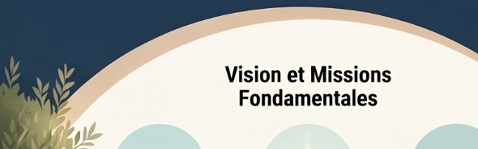

Données personnelles
Politique de confidentialité
Cette page doit rester claire, accessible et conforme au RGPD, sans inventer de données juridiques manquantes.
- finalité du formulaire
- durée de conservation
- droits des personnes
- contact RGPD
- cookies éventuels